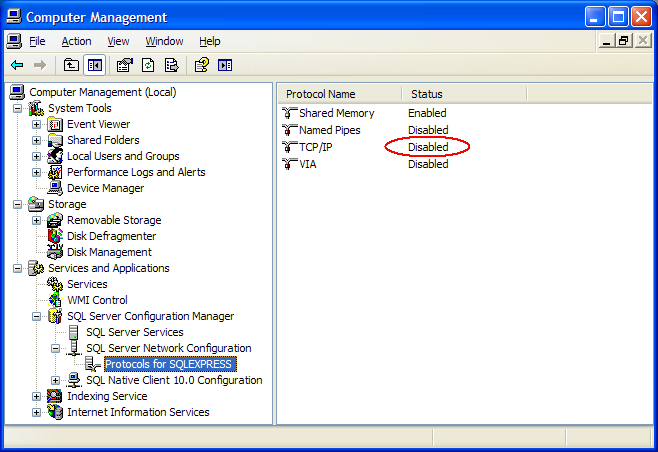
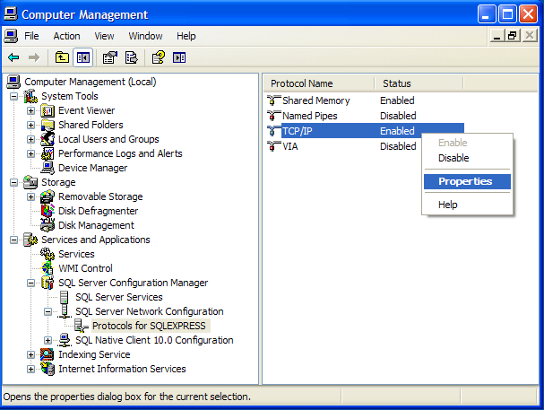
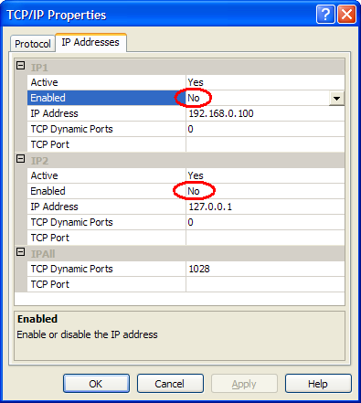
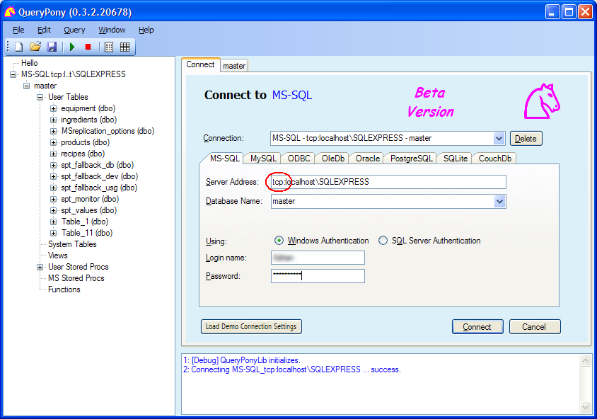

Start
Connect
Treeview
Query
Options
Settings
About
MS-SQL via TCP/IP
QueryPony User Manual → The Connect Form →
To connect to the legacy Microsoft SQL Server 7 and Microsoft SQL Server 2000 from QueryPony, you may need a non-standard procedure. Those versions do not yet know the shared memory protocol used by default by today's versions, but they speak TCP/IP. This page shall help you to configure a connection using TCP/IP.
To force a connection to use TCP/IP, just prepend 'tcp:' to the server name. But in order for such connection to succeed (1) the server has to offer the TCP/IP protocol and (2) the client machine has to allow using it.
This chapter just documents how I made a TCP/IP connection work on a Windows XP station with a SQL Server Express 10.0 (not having available a true legacy SQL Server). The procedure will surely look different on your station, but the story might give you an idea on what is involved.
(1) Try to connect with the 'tcp:' prefix.
Try to connect via TCP/IP to a Microsoft SQL Server. Instead of
'localhost' you may also write '127.0.0.1' or the name of the machine.
(2) QueryPony probably refuses to connect.

Trying to connect via TCP/IP may result in this error message.
(3) On the machine with the SQL Server, go to the Control Panel and inspect the protocols your SQL Server is offering.

The TCP/IP protocol is disabled by default. Rightclick and enable it!
(4) Windows tells you to restart the SQL Server.

Restart the SQL Server or the simply reboot.
(Or wait because below comes another restart.)
(5) Though set being enabled, the TCP/IP protocol seems not yet available. So have a closer look on the properties.

Have a closer look to the protocol settings by rightclick/Properties.
(6) The Protocol Properties dialog shows a second place where the TCP/IP protocol must be enabled (per network card).

Set the protocol to 'Enabled = Yes' on the Protocol Properties dialog as well.
Again the SQL Server needs to be restarted (could have skipped the restart above).
(7) Not only the server has to be ready to talk TCP/IP, but also the client machine has to allow for it. Again go to the Control Panel, this time for the Windows Services. (Of course, if the SQL Server is on 'localhost', the server machine and the client machine are the same.)

If you see the SQL Server Browser disabled, then start it!
(8) Back in QueryPony, I try again to make a SQL Server connection via TCP/IP and -- it works!

Connection via TCP/IP to a Microsoft SQL Server succeeded.
Above description does not tell anything about the security issues you raise when you open the TCP/IP protocol for the SQL Server. Escpecially on a productive system, you have to know what you are doing. Perhaps it is not allowed at all in your environment, or at least you may want to adjust the firewall(s) accordingly.
Note: The procedure described above is not yet confirmed or finetuned by other people. I wish you good luck. Please feedback any mistakes.
Blog article Microsoft SQL Server 2014, 2012, 2008R2, 2008, 2005, 2000 and 7.0 Builds . provides a nice summary about the existing SQL Server versions.
On the MSDN page System.Data.SqlClient Namespace the crucial statement about accessing SQL Server 7 and SQL Server 2000 is found: Caution ADO.NET 2.0 does not support asynchronous commands over shared memory for SQL Server 2000 or lower. However, you can force TCP instead of shared memory. You can do that by prefixing tcp: to the server name in the connection string or you can use localhost.
The Microsoft support page How to configure SQL Server 2005 to allow remote connections describes the TCP/IP configuration for a remote connection to the SQL Server(s).
The blog article Enable Remote Connection on SQL Server 2008 Express describes how to configure a remote connection to SQL Server 2008.
{kind=link}
{kind=link}
{kind=link}
{kind=link}
{kind=link}